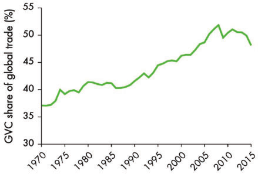
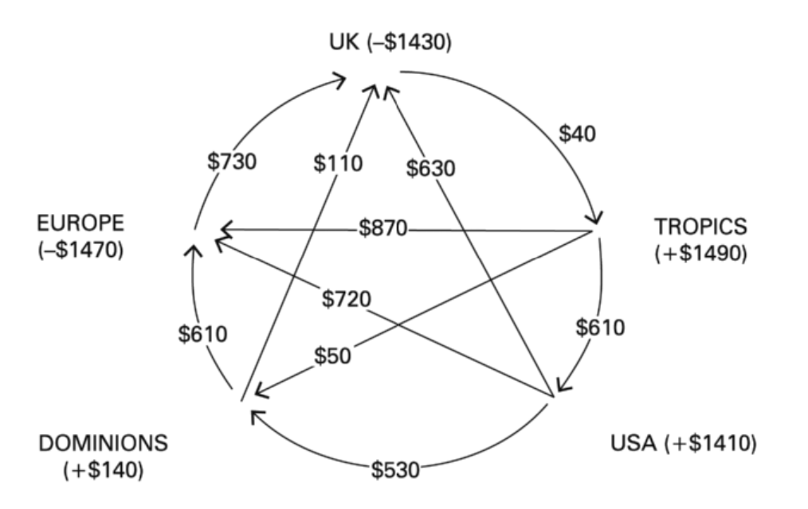

12 Imperialism
How is imperialism relevant today? How has it mutated over the past century? What are different theoretical and empirical angles through which we can study imperialism? These are the questions we deal with in our edited volume on ‘The Changing Face of Imperialism’.
We understand imperialism as a continuing arrangement since the early years of empire-colonies to the prevailing pattern of expropriations, on part of those who wield power vis-à-vis those who are weak. The pattern of ‘old imperialism’, in the writings of Hobson, Hilferding and Lenin, were framed in the context of the imperial relations between the ruling nations and their colonies with political subjugation of the latter, captured by force or by commerce, providing the groundwork for their economic domination in the interest of the ruling nations. Forms of such arrogation varied, across regions and over time; including the early European invasions of South America, use of slaves or indentured labour across oceans, and the draining off of surpluses from colonies by using trade and financial channels. Imperialism, however, has considerably changed its pattern since then, especially with institutional changes in the prevailing power structure.
We do not have a single theory of imperialism applicable to all times, but several which correspond to multiple historical manifestations of imperialism in the contemporary phase of capitalism. Earlier theories of imperialism a focus on the conflicts between nations representing interests of national capitals, while nation-states currently are no longer the organizing unit in the context of globalisation and universal capitalism. Thus, the characterisation of imperialism today cannot be limited to a rivalry between advanced capitalist countries nor as an expression of conflict between developed and underdeveloped nations. Rather, it has to encompass the power structure and internal articulation of global capitalism.
The cost-cutting exercises by Multi-National Corporations, which displaces the domestic workers by cheaper foreign labour, achieved either through emigration of production (“outsourcing”) to overseas or through immigration of workers. This so-called neoliberal globalisation is the new imperialist stage of capitalist development, where imperialism is characterised by the exploitation of “southern” labour by northern “capital”.
Today’s imperialism is marked by the retreat and subservience of the state to international finance and, consequently, as the only political option, a selective delinking of the national economy from the global economy.
Today’s imperialism is a policy of conquest through force and violence over the “outside” of the capitalist world.
The “third world” countries, now located within the overall circuit of global capital, have access to global finance, markets and technology, and their big bourgeoisie have become major players in the international market However, the significant factor remains that the workers in these countries are way behind those of the United States, in terms of their wages, and their lives are not on par with those of the workers in developed countries. Through reforms and globalisation, we witness a process of enrichment of the ruling classes, while the vast masses of people remain detached from these capitalist processes and remain impoverished.
Imperialism as domination through financialisation and neo-mercantilism
Latin American economies failed to adopt a successful neomercantilist model, also that the region did not benefit from the new international division of labour, which shifted the manufacturing industry from the United States to developing economies.
The role of military spending in US, with imperialism as the velvet glove as opposed to the iron fist of the rise of neoliberal policies and globalisation.
Workers do not, on balance, gain from US imperialism, at least since 1985. This contrasts the previous three decades when US workers had much more power to get a piece of the imperialist pie.
India, colonialism and contemporary issues with imperialism
Britain, the world capitalist leader at the centre of the global payments system, was crucially dependent on India’s export earnings for financing the current account deficits with the rest of world. With access to the rising foreign exchange earnings of its colonies, Britain could settle its own external deficits as well as to export capital overseas.
Faced with a shortage of labourers at the end of slavery, the planters in the British colonial islands pressurised their imperial government to find ways to supplement labour cheaply. The desperately poor and famine-stricken populations of colonies in Asia and in India, in particular, turned out as the target of an organised large-scale emigration of indentured labourers from India to plantation colonies, on basis of coerced labour in sugar plantations. It can also be seen that the waves in immigrant flows were singularly linked to the fortunes of sugar plantations. A triangular network involving labour (indentured), commodities (both raw sugarcane and processed) and finance characterised the relationship between Britain and the such colonies. This was the variety of imperialism, rooted initially in slave trade and later in movements of indentured labour which proved a lucrative source of earning surpluses and it’s appropriation by commercial and financial interests of imperial Britain.
There has not been any finance/service-led growth in India. The distribution of income moving very sharply in favour of corporates, which is to the disadvantage of India’s working population, mostly in agriculture and in the informal non-agricultural sectors.
Sen (2019) Changing Face of Imperialism
12.1 Global Value Chains (GVC)
12.1.1 Oligopoly-driven Development
Selwyn Abstract
The World Development Report 2020 (WDR2020) asserts that global value chains raise pro- ductivity and incomes, create better jobs and reduce poverty, and proposes state policies to facilitate global value chain-based development. We deploy an immanent critique of WDR2020 to interrogate its claims regarding wages and working conditions. Using the Report’s own evidence, we identify contradictions in its claims, which stem from its use of comparative advantage trade theory to reconceptualize global value chain relations. This perspective predicts mutual gains between trading partners, but its core assumptions are incompatible with the realities of global value chains, in which (mostly Northern) oligopolistic lead firms capture value from (mostly Southern) suppliers and workers. We show how WDR2020 conceals these contradictions by misconstruing, inverting and ignoring evidence (particularly of labour’s agency), whilst failing to recommend redistributive measures for the unequal outcomes that it recognizes. By redeploying heterodox conceptions of monopoly capital and by using a class-relational approach, we scruti- nize WDR2020’s overly positive portrayal of lead firms. We provide alternative theoretical foundations to better explain the evidence within the Report, which shows that global value chains concentrate wealth, exacerbate inequalities and constrain social upgrading – with negative consequences for supplier firm workers in developing countries.
Selwyn Memo
WDR 2020 World Development Report
Ever since their inception in 1978, World Development Reports (WDRs) have sought to promote their portrayal of inclusive global development. Framed in the mutual gains rhe- toric of comparative advantage trade theory, they are pitched at the level of the general interest – as applicable to the entire international policy-making community. WDR2020 Trading for Development in the Age of Global Value Chains (‘the Report’) presents itself in the same light, confidently proclaiming that ‘GVCs boost incomes, create better jobs and reduce poverty’ (WDR2020: 3)
In a world of global value chains (GVCs), according to the Report, developing countries no longer need to establish entire industries. Rather, through linking up with lead firms (mostly transnational corporations (TNCs)), they can access best-practice techniques and latest technologies, and match them with their comparative advantage ‘factors of produc- tion’ of cheap labour and natural resources. The Report emphasizes the benefits of ‘relational’ GVCs whereby ‘durable firm-to-firm relationships promote the diffusion of technology and access to capital and inputs along chains’

The Report’s core argument that ‘GVCs boost incomes, create better jobs, and reduce poverty’. In fact, the Report itself provides evidence to suggest that GVCs concentrate wealth, repress incomes, create many bad jobs (low-wage, low-skill, low-security and with poor working conditions), and reproduce new forms of in-work poverty.
Monopoly capital theory is more consistent with the evidence of unequal outcomes generated through GVCs.
Selwyn (2021) Oligopoly-driven development: The Word Bank’s Trading for Development in the Age of Global Value Chains in perspective (pdf)
12.1.2 Digital Imperialism
American “Big Tech” corporations are gaining massive profits through their control over business, labor, social media and entertainment in the Global South.
Big Tech is not only global in scope, it is fundamentally colonial in character and dominated by the United States.
Digital colonialism is the use of digital technology for political, economic and social domination of another nation or territory.
Under classic colonialism, Europeans seized and settled foreign land; installed infrastructure like military forts, sea ports and railways; deployed gunboats for economic penetration and military conquest; constructed heavy machinery and exploited labor to extract raw materials; erected panoptic structures to police workers; marshaled the engineers needed for advanced economic exploitation (e.g. chemists for extracting minerals); siphoned out Indigenous knowledge for manufacturing processes; shipped the raw materials back to the mother country for the production of manufactured goods; undermined Global South markets with cheap manufactured goods; perpetuated dependency of peoples and nations in the Global South in an unequal global division of labor; and expanded market, diplomatic and military domination for profit and plunder.
In other words, colonialism depended upon ownership and control of territory and infrastructure, the extraction of labor, knowledge and commodities and the exercise of state power.
This process evolved over centuries, with new technologies added into the mix as they were developed. By the late nineteenth century, submarine cables facilitated telegraphic communications in service of the British empire. New developments in recording, archiving and organizing information were exploited by US military intelligence first used in the conquest of the Philippines.
Today, Eduardo Galeano’s “open veins” of the Global South are the “digital veins” crossing the oceans, wiring up a tech ecosystem owned and controlled by a handful of mostly US-based corporations. Some of the transoceanic fiber-optic cables are fitted with strands owned or leased by the likes of Google and Facebook to further their data extraction and monopolization. Today’s heavy machinery are the cloud server farms dominated by Amazon and Microsoft that are used to store, pool and process big data, proliferating like military bases for US empire. The engineers are the corporate armies of elite programmers.
More broadly, digital colonialism is about entrenching an unequal division of labor, where the dominant powers have used their ownership of digital infrastructure, knowledge and their control of the means of computation to keep the South in a situation of permanent dependency. This unequal division of labor has evolved. Economically, manufacturing has moved down the hierarchy of value, displaced by an advanced high-tech economy in which the Big Tech firms are firmly in charge.
Digital colonialism is rooted in the domination of the “stuff” of the digital world that forms the means of computation — software, hardware and network connectivity.
It includes the platforms acting as gatekeepers, the data extracted by intermediary service providers and the industry standards, as well as private ownership of “intellectual property” and “digital intelligence.” Digital colonialism has become highly integrated with conventional tools of capitalism and authoritarian governance, from labor exploitation, policy capture and economic planning to intelligence services, ruling class hegemony and propaganda.
The shift to cloud services nullified the freedoms FOSS licenses had granted to users because the software is executed on the computers of the Big Tech corporations. Corporate clouds dispossess the people of the ability to control their computers. Cloud services provide petabytes of information to corporations, who use the data to train their artificial intelligence systems.
In the South, the majority of the people are essentially stuck with low-level feature phones or smartphones with little data to spare. As a result, many millions of people experience platforms like Facebook as “the internet,” and data about them is consumed by foreign imperialists.
In other words, the tech giants control business relationships across the commodity chain, profiting from their knowledge, accumulated capital and dominance of core functional components. This allows them to bargain down or dispense with even relatively large corporations who mass-produce their products as subordinates. Universities are complicit. The most prestigious ones in the core imperialist countries are the most dominant actors in the academic production space, while the most vulnerable universities in the periphery or semi-periphery are the most exploited, often lacking the funds for research and development, the knowledge or capacity to patent findings and the resources to fight back when their work is expropriated.
China, after decades of high growth, generates around 17 percent of global GDP and is predicted to overtake the US by 2028, feeding into claims that American empire is on the decline (a narrative that was previously popular with the rise of Japan). When measuring the Chinese economy by purchasing power parity, it is already larger than the US. However, as economist Sean Starrs points out in the New Left Review, this wrongly treats states as self-contained units, “interacting as billiard balls on a table.” In reality, Starrs contends, American economic dominance “hasn’t declined, it globalized.” This is particularly true when looking at Big Tech.
Portraying the US and China as equal contenders in the battle for global tech supremacy, as is often done, is therefore highly misleading.
In reality, the US is the supreme tech empire. Outside of US and Chinese borders, the US leads.
Instead of sharing knowledge, transferring technology and providing the building blocks for shared global prosperity on equal terms, the rich countries and their corporations aim to protect their advantage and shake down the South for cheap labor and rent extraction. By monopolizing the core components of the digital ecosystem, pushing their tech in schools and skills training programs and partnering with corporate and state elites in the South, Big Tech is capturing emerging markets.
Kwet (2021) Digital colonialism: the evolution of American empire
12.2 World Bank
Bair Abstract
In this article, we analyze the strategies, surprises, and sidesteps in the World Bank’s 2020 World Development Report, Trading for Development in the Age of Global Value Chains. Strategically, the Report promotes an expansion of neoliberal globalization couched in the language of global value chains. Curiously detached from the broader academic literature on global value chains in international trade, it promotes a sequentialist vision of global value chain upgrading that evokes the stagism of classic modernization theory. The authors sidestep important issues, such as China’s pivotal role in the landscape of global trade, and are largely silent on others, including climate change. Significantly and somewhat surprisingly, given the general endorsement of global value chain integration, the Report acknowledges negative distributional trends associated with the rise of global value chains, including the excessive benefits reaped by “superstar firms” and the now well-documented decline in labor’s income share. These observations are not reflected in the document’s policy section, however, where the World Development Report largely recapitulates familiar prescriptions, with the threat of nationalist populism and rising protectionism providing a new bottle for this old wine. Drawing on a range of literature including United Nations Conference on Trade and Development’s 2018 Trade and Development Report, we highlight not only the limits of the Bank’s adherence to an increasingly embattled orthodoxy, but also the necessary starting points for a more useful discussion of the merits, limits, and future of global value chains.
12.3 Dollar Empire
Schwartz Memo

Figure: Structure of net world trade surplusses, 1928. (Diagram from States vs. Markets, arrow points in direction of surplus.)
Global use of the dollar largely benefits the top 1 percent of wealth holders in the United States, while imposing job losses and weak wage growth on much of the rest of the country. This situation flows from the structural requirements involved in having a given currency work as international money.
A country issuing a globally dominant currency necessarily runs a current account deficit.1 Prolonged current account deficits erode the domestic manufacturing base. And as current account deficits are funded by issuing various kinds of liabilities to the outside world, they necessarily involve a build-up of debt and other claims on US firms and households.
A large share of those foreign claims are on US firms in the form of corporate equity. US holdings of foreign firms’ equity are roughly equal in size, but these are largely held by the top 1 percent. The bulk of US debt to the rest of the world is public and private debt, including securitized mortgages. As the top 1 percent largely avoid taxation, the broad US public is on the hook for those debts. The rich reap the rewards of dollar dominance in the form of financial rents and easier tax avoidance. Meanwhile, the rest of us compete against artificially cheap low wage imports while struggling to find affordable housing.
Two flaws in traditional histories of the nineteenth century European empires
The first flaw sees the centers of those empires as internally coherent, unified nation states, like those that populated Europe and North America after the first and second world wars. Instead, I argue, nineteenth-century imperial European states are better understood as systems of power with permeable boundaries between the center and a hierarchically ordered, integrated set of peripheries.
The imperial European states of the nineteenth were hardly the linguistically and culturally unified states of the postwar era. All had seen massive in-migration—including from their tropical colonies—into populations who themselves spoke distinct dialects, while also emitting millions of emigrants to the temperate zone colonies. As Ian Lustick has demonstrated, imperial officials did not draw sharp lines between center and periphery, even as they drew nearly impermeable lines everywhere on the basis of race. Consistent with Feygin and Leusder’s argument, banking elites in London, Montreal, and Melbourne had more in common with each other than with the ranchers, dockworkers, or butchers bringing Australian lamb and prairie wheat to that London banker. Metropolitan and settler elites circulated across center and periphery in parallel with the unskilled laborers in steerage, as the careers of Leo Amery or Cecil Rhodes show.
The second and related flaw is in taking the later empires built in Africa (and to a lesser extent Asia) as the generic model, rather than the earlier British “empire of food.” From an economic standpoint—which mattered for the British pound—the real imperial action occurred earlier in the nineteenth century with the genocide and displacement of indigenous populations in thinly settled temperate zones and their replacement by mostly European settlers. Australia, Argentina, Canada, New Zealand, and, above all, the United States became prodigious exporters of the food and agricultural raw materials that fed the workers and machines of Europe’s industrial revolution. Compare: total British investment in Australia, with a population roughly 4 million in 1900, roughly equaled that in British India, with a population of over 300 million. British exports to Australia and New Zealand from 1894 to 1913 exceeded its exports to all of sub-Saharan Africa. All of that trade and investment was denominated in pounds sterling, flowing through banks with sterling-denominated ledgers, and managed, yes, by a transnational but culturally and largely ethnically British financial elite.
This is the historical context in which we should understand the geo-political and geo-strategic advantages of the dollar’s role in the monetary system. The dollar functions not only as the currency of a specific nation, but also as the currency of a global imperial state centered on but not exclusively limited to the United States as a formal legal entity. As in the nineteenth century, the lines between the imperial core and its dependencies are blurred, those dependencies have differential status in the imperial hierarchy, challengers reside inside and outside that hierarchy, and a single currency is an important bulwark of that empire. There are four important aspects to this role for the US dollar.
First, the dollar partially frees the US state and allies from resource constraints. In both world wars, the British temperate zone empire of food was a decisive factor tipping the balance of physical resources in favor of the Allies against Germany. And Britain’s tropical empire, particularly India, was a decisive manpower resource in World War I, providing the vast majority of combatants outside the European theatre and over 20 percent of total troop strength; the white settler colonies contributed a further 20 percent. The British empire, including its constituent parts, largely issued sterling-denominated debt to buy these physical and human resources. Similarly, dollar debt funds US special forces who train local militaries today as auxilia.
Although there is no mechanical relationship, the cumulative US current account deficit from 1992 to 2019 equals 83 percent of cumulative US official defense spending over that period. Major expansions of the military budget run concurrent with increases in the current account deficit. In essence, current account surplus economies give the US enough consumer goods on credit to free up domestic productive resources for the outsized US military apparatus. This ability to draw on global resources rests not only on other actors’ belief that they can use those dollars in the future to purchase US goods, but also on their own economies’ reliance on the US market for growth. Excepting China after 2010, the major export surplus countries all grew more slowly than the United States after 1992, despite their export surpluses. And other major countries with current account deficits are also hostage to US growth—most obviously, Canada and Mexico. How would Britain grow if the City of London were not the global center for dollar based financial flows, or Ireland not a convenient tax haven? Holding and using dollars keeps their currencies from appreciating and pricing their exports out of world markets.
Second, all five Anglo countries are tightly tied geopolitically to the United States through some combination of intelligence cooperation, alliance-based joint exercises, actual warfighting, and a dense network of circulating elites. The integration of military and intelligence organizations is every bit as dense as with finance, and, as with finance, there is a hierarchy of privilege and access that radiates out from the center. These military ties run parallel to the financial ones. The truism that oil exporters exchange dollar pricing of oil for US military protection can be understood in even broader terms, as the current debate over removing troops from Germany shows.
Third, the Federal Reserve Bank is de facto the world’s central bank. By acting as lender of last resort in global crises, the Fed has structural power over almost all of the global financial system. Access to the Fed is a life or death issue for non-US banking systems in major financial crises. The US dollar is, in technical terms, global “state money” or “outside money.” Put as simply as possible, monetary systems generally are composed of both inside money (created inside the financial system) and outside money (created by the state outside the financial system). Banks exchange purchases of public debt for a license to create inside money, that is, credit to other private actors. This credit need not rely on prior savings. Rather, the extension of credit creates a loan, which shows up as an asset; the simultaneous deposit of loan funds into the borrower’s account creates a liability for the bank. Et voilà, new money now exists. Globally, non-US banks generate almost all of the 60 percent of cross-border lending that is US dollar-denominated. In other words, they voluntarily create the dollar liabilities on their balance sheets that make them ultimately depend on the Fed in a crisis. But ‘voluntarily’ here needs to be understood in the context of societies whose exports to the United States transform stagnation into merely mediocre growth. The Eurozone’s cumulative export surplus from 2011 to 2018 equals 90 percent of the US cumulative current account deficit.
Only regulation and bankers’ weak self-discipline limit the creation of inside money. In the 2000s, European and other banks took dollars earned through their trade surpluses and dollar-denominated inside money created in the eurodollar system and recycled them into global lending. The balance sheet of the average European or Canadian banking system was over one-third dollar denominated, amounting to roughly $14 trillion of assets in 2017. This created considerable vulnerability if, as in 2008 and 2020, the collateral backing the asset side of the balance sheet collapsed and borrowers defaulted on their loans. All those banks needed US dollars, but their central banks could not create outside money to bail out banks’ US dollar-denominated liabilities. Instead, the Fed created dollars—outside money—to lend to those central banks for on-lending to their local systems. As with military cooperation, more tightly integrated and cooperative countries received better treatment and faster access to these swap lines. The inner Anglo-circle of financial ties is so close that some analysts refer to “Anglo-American finance” as a coherent whole, and describe the Bank of Canada as the “13th Federal Reserve Bank.” The use and recycling of dollars maintains the transfer of resources noted in the first two points above.
Fourth, widespread use of the dollar means that most trade and financial flows are settled through plumbing controlled by either the US state or entities regulated by the US state. This gives the US state, mostly via the Treasury Department, a kind of tactical or operational power vis-à-vis non-US financial systems in non-crisis situations. The global financial plumbing system uses the Fed-wire, CHIPS and SWIFT networks, which largely settle through New York. Regulatory oversight of the networks and non-US banks’ need for a presence in the United States give the US state the ability to compel behavior from non-US banks. For example, the threat of exclusion from clearing networks compels foreign banks to comply with sanctions against geo-political enemies. SWIFT expelled Iranian and North Korean banks from its payments network, greatly hindering their nuclear programs and their normal commerce. The US state also used the threat of expulsion from the payments network to compel banks to enforce sanctions on some Russian banks and firms after Russia invaded Crimea. The US state similarly used SWIFT data on global financial transfers to identify and target terrorist groups. The Fed supplies the carrot of crisis management, while the Treasury wields the stick of exclusion from the payments system.
Analysis like Feygin and Leusder’s is correct call out the exorbitant burden the US dollar imposes on the non-elite US population. But that burden needs to be seen in the context of the overall system of power radiating unevenly from Washington, New York, Silicon Valley, and so on, through a network of allied states, firms, and free floating intellectuals that cross the permeable boundaries of formal citizenship and legal domicile. That system of power is anchored in and funded by use of the dollar as the de facto currency of a global imperial state centered on (not in) Washington. The exorbitant privilege does not net out the exorbitant burden; it is the obverse of a coin held by much of the global power elite.